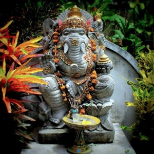
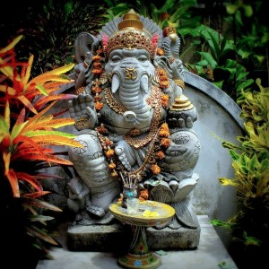

Балийский индуизм, или по-другому — Agama Hindu Dharma является смесью Шиваизма и Буддизма. Сама религия Бали основывается на индуистской философии, в то время как основой для ритуалов являются местные верования, которые заключаются в том, что существует некая сила и сила эта — природа, каждый её элемент подвержен влиянию духов. Кроме того, частью верований является поклонение предкам.